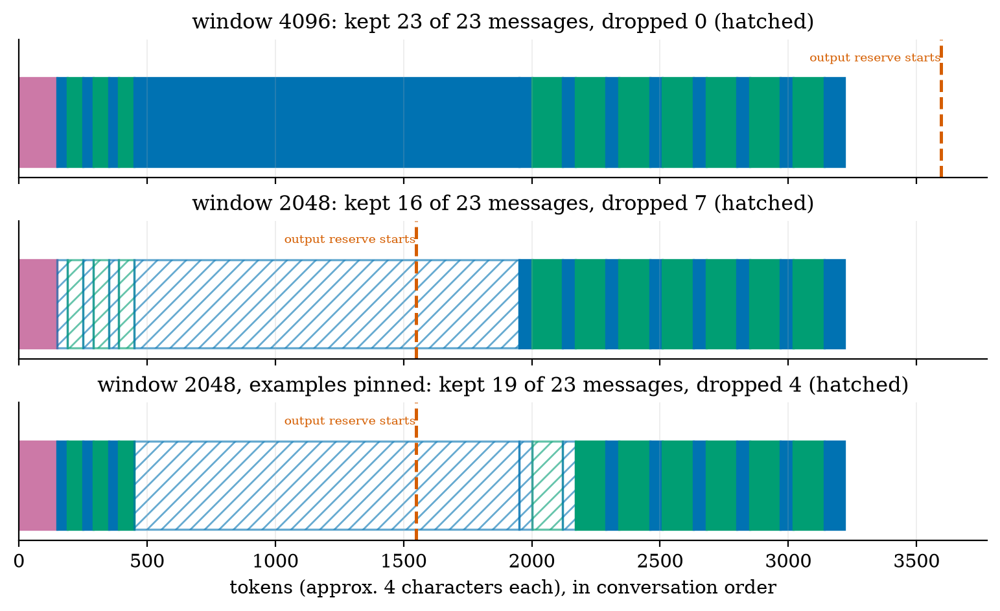
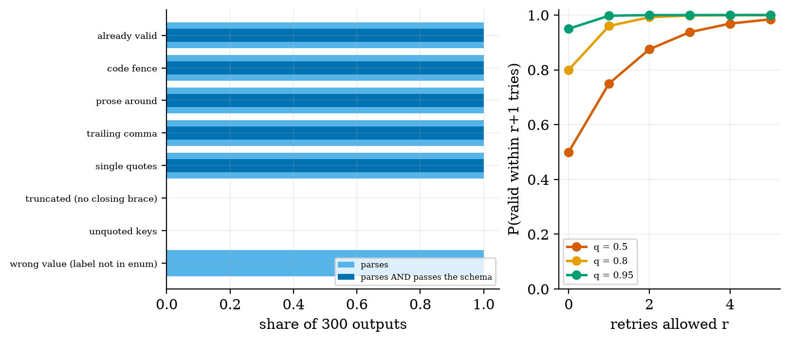
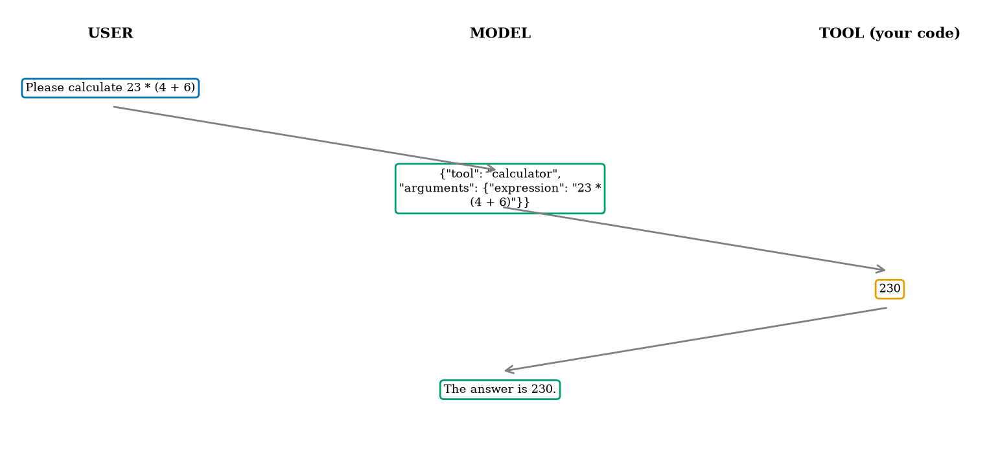
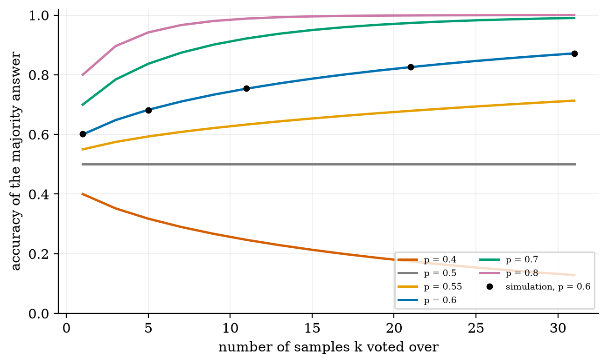
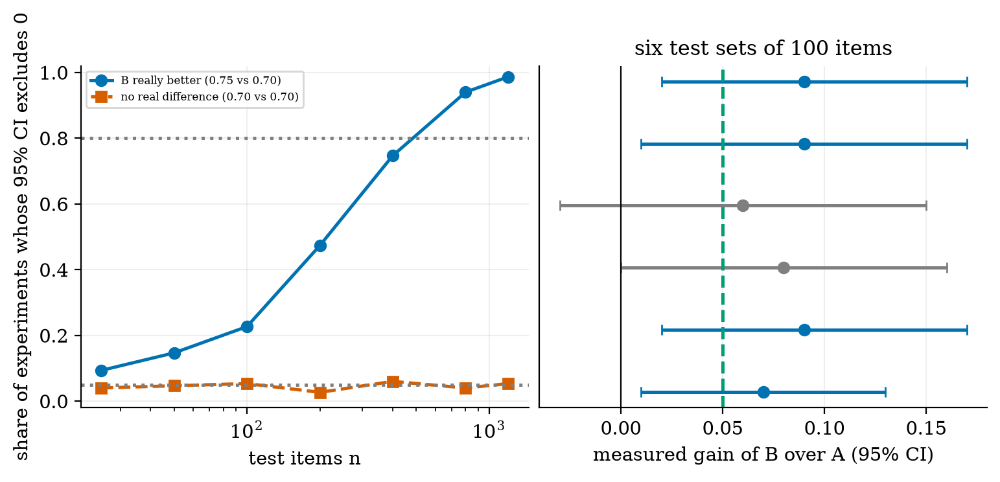

explain a prompt as the prefix an LLM continues and build zero-shot, few-shot, role and chain-of-thought prompts;
budget a context window and say what is silently lost when a chat gets too long;
make output machine-readable: schema, validation, repair and retry, and know what each can and cannot fix;
build a tool-calling loop with validated arguments;
evaluate prompts honestly: derive majority-vote accuracy, run a paired comparison with a confidence interval, and say how many test items you need.
The big picture
An LLM only continues text (Unit 3). Prompt engineering is choosing the text it continues. Four moves cover most of the craft:
1. Say it clearly (task, format, audience). 2. Show it with two or three worked examples (few-shot). 3. Give a role and rules in the system message. 4. Let it think on paper (chain-of-thought).
Everything must fit in the context window, and the model has no memory: you re-send the whole chat every turn, so cost grows with the square of the number of turns.
Never trust the output. Treat model replies like user input: validate JSON against a schema, validate tool arguments before running anything, and never run model output as code. The calculator tool in the code zip first accepted 9**9**9, which never finishes; the final version rejects it.
Measure, don’t guess. A 7-point gain on 100 test items has a 95% interval of [−2.3, +16.3] points: not distinguishable from noise. To detect a 5-point gain you need roughly 450–500 items. Everything about real models here is cited, not measured: this course machine had no model or API key.
Key equations
Why long chats get expensive: the model re-reads the history every turn (s = system prompt, t = tokens per turn).
Accuracy of a majority vote over k independent answers, each right with probability p.
Voting helps exactly when p > 1/2.
Paired comparison of two prompts: b items only B gets right, c items only A gets right.
Test items needed to detect a true gain δ with 80% power.
Figures

A 23-message conversation in two windows: with 2,048 tokens the oldest messages, the few-shot examples and the retrieved documents, are dropped first. Pinning the examples keeps them.

Repairing damaged JSON: fences, prose, trailing commas and single quotes are fixed every time; truncated JSON and unquoted keys never; a wrong value parses but fails the schema.

One tool call, drawn from the real log of the module’s tool loop with a mock model.

Majority vote accuracy for several single-answer accuracies: helps above 0.5, flat at 0.5, hurts below. Exact curves and a simulation check.

A simulation: how often a paired test detects a true 5-point gain as the test set grows (23% at 100 items, 94% at 800).
Try it in the playground
Each link opens the widget with good starting settings. Every option has a plain-English label and a one-line help text.
Context window budget
Set the window and each part of a chat; see what is dropped and what the chat really costs.
The toolkit needs no model: it uses a MockLLM to test the plumbing. After downloading and unzipping the All code (.zip):
pip install -r requirements.txt
python codes/llm/prompting_tools/prompting_tools.py # tool loop with the mock model: "The answer is 230."
python codes/llm/prompting_tools/tests/test_prompting_tools.py # 9 tests, prints: ok
python figures/fig02_majority.py # reproduces the majority-vote figure
For the three syllabus projects with a real small model, open the Colab notebook from the downloads above. It was written but not executed while authoring this course (no GPU, model or API key there); the model it uses (Qwen/Qwen2.5-0.5B-Instruct) was confirmed to exist on the Hugging Face hub. If a cell fails because a library changed, the helper code in the zip is what matters.
Self-check
Answer in your head first, then click to reveal.
What do the four message roles do?
System: standing rules. User: the request. Assistant: earlier model replies. Tool: results of functions your code ran.
Why does a 7-turn chat cost far more than 7 times one turn?
The model is stateless, so every turn re-sends the whole history: total input grows like K(K+1)/2.
Name two things the JSON repair function can fix and two it cannot.
Can: code fences, text around the JSON, trailing commas, single quotes. Cannot: truncated JSON, unquoted keys (and it cannot fix a wrong value).
If one answer is right with probability 0.4, does a majority vote of 21 help?
No, it hurts (about 0.17): voting only helps when a single answer is right more than half the time.
Why is a 5-point gain on 100 test items usually not convincing?
The 95% interval is about ±9 points wide, so it includes zero; you need roughly 450–500 items.
Why can the ‘significant’ results of many small experiments mislead?
Selecting on significance selects lucky samples: in the simulation the significant results averaged 0.10 for a true gain of 0.05 (the winner’s curse).